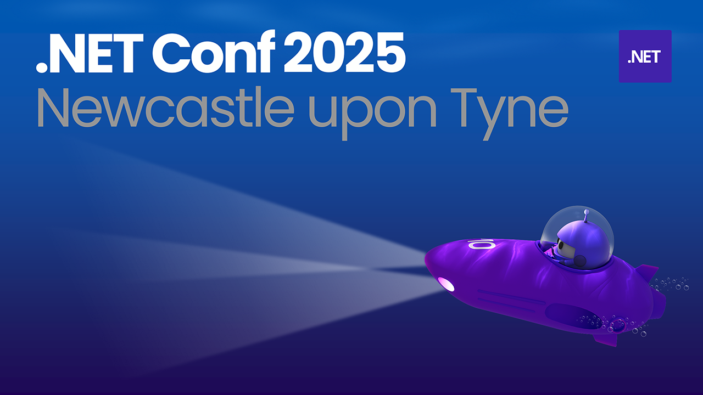

.NET Conf 2025 - Newcastle upon Tyne
Introduction
.NET Conf 2025 - Newcastle upon Tyne was a chance to celebrate the launch of .NET 10 and Visual Studio 2026 with a range of lightning talks on a variety of topics from a whole host of speakers in the North East of England and beyond.
.NET Conf 2025 Overview - Peter Bull
I talked about .NET Conf 2025 itself with an overview of some of the announcements there. I've used every single major version of .NET and Visual Studio and was awarded Microsoft MVP for .NET and Windows Development along with working as a software developer as well as through Cluarantonn who help podcasters and soon programmers. I have creations including websites, packages including assets or toolkits plus learning, along with articles and podcast plus tutorials, talks and workshops.
.NET is the free open-source, cross platform framework from Microsoft for building apps including games, mobile, cloud, agent with AI or ML along with web, desktop and IoT. .NET developers can use libraries and tools including Azure, packages from NuGet, deploy with Aspire and developer on Visual Studio and GitHub for Windows, Linux and macOS. .NET has evolved and it isn't the same as it was twenty-five years ago, but it could allow you to bring code from back then right up to date to run on today's devices.
.NET 10 is the latest long-term release of .NET, and it is a supercharged SDK including runtime improvements, new library APIs and support for single-file based apps which enables creating code without a project file. .NET enables developers to build more secure and future ready apps with confidence with modern features for web, cloud, mobile, cross-platform and more along with being designed for today's and tomorrow's workloads and helps reduce costs including services such as Microsoft Copilot, Xbox and Bing. .NET 10, which is a long-term support or LTS release and supported for three years with updates and fixes can be obtained from get.dot.net/10.
C# 14 which is delivered with .NET 10 features null-conditional assignment where you can do conditional assignment to potentially null objects, there's a new extension member syntax which enables extension properties to be defined as well as extension methods. C#14 allows access to compiler generated backing field with field-backed properties without needing to define an explicit backing field along with being faster, more extensible and elegant plus can find out more about C# at csharp.net.
Visual Studio 2026 is the latest version of Visual Studio for Windows and is optimised for .NET 10 and C++ along with being ready to grow with regular monthly featured updates plus is more performant with solutions starting up to 50% faster with quicker build, edit and debug cycles even on massive codebases. Visual Studio 2026 features a modern design with Fluent UI that is easier to navigate and to focus on code with assistance from GitHub Copilot which is better than ever to help you stay in your flow and level up with AI and can download Visual Studio 2026 at visualstudio.com.
Aspire, formerly Aspire.NET, orchestrates stacks including frontends, APIs and more with a unified infrastructure cross .NET, Python and JavaScript with debugging and container deployment supported. Aspire features a modern development experience with CLI enhancements with support for single-file AppHost leveraging the single-file app support in .NET 10 along with quicker onboarding. Aspire supports seamless build and deployment along with being enterprise ready for infrastructure and services with flexible connection string and cross language certificate trust. Find out more about Aspire which is code-first, extensible and observable with telemetry at aspire.dev.
.NET Conf 2025 was between 11th and 13th of November with sessions about .NET 10, C# 14, Visual Studio 2026 and Aspire along with sessions on AI, observability and more which can be found at dotnetconf.net.
Transactional Integrity in Distributed Communication - Samson Nwizugbe
Samson works as software engineer in Liverpool and most of their experience is around professional management and enterprise inspiration in .NET with analysis and commercial experience. He talked about challenges of transaction management and designing resilience in distributed systems, the steps and actions a single unit in a business process.
Samson talked about the reasons on a problem with distribution which has been around for a while which is breaking down the work for lots of computers, there can be differences between latency between computers and need to be able to send messages between to point and point b and point c and need to make sure that packets get there correctly and systems happen reliability and all systems receive it. What happens if you send a message to one systema and send a second message and this doesn't get there the system could be in an unexpected state where transactional patterns can ensure reliability.
Two Phase commit is one of the earliest standards for communication between machines where could have three computers communicating to persist the transaction, where the protocol is mostly standardised between machines that execute the SQL such as MSTM protocol and systems that services this protocol is for SQL machines to is for processing a unit and ensuring the status of machines in the process where receive feedback and the coordinator only proceeds if both commits have been carried out.
The second pattern is a Saga that owns the process and message and managing the state of a transaction and participants in the transaction where messages are being sent and orchestrating any compensatory actions that may or may not be needed the difference with this compared to two-phase commit is where can delegate the process with fire-and-forget patterns but can also have choreography where have systems sending messages between each other with queues and compensatory actions ore where systems can respond to success or failed states and orchestrate between systems.
What is MCP and why it matters - Kris Olds
Kris talked about what is MCP and why it matters. AI agents are not just another chatbot they plan and take actions using tools, so not just ChatGPT the lifecycle looks like where you ask an AI agent to prompt something where it will infer and find a tool and then evaluate the results and call another tool if it isn't satisfied with the results it got. Model Context Protocol it removes the need to create custom integrations between Ai applications and external applications. You could implement an AI application before MCP with unique integrations but now with MCP you can create tools and toolsets which can go into an MCP server which hosts it and be able to plug this into an AI application which can use these and allows them to connection with external applications and tools like a universal remote for AI.
Why does MCP matter, it's one protocol, it's not model specific as it can work with any AI model you want to use such as Deep Seek and Claude which can use them and removes the need for custom integrations for each AI model or integration you want to use. You can reuse your existing tools where APIs, databases and other integrations all be come usable by an agent with just a small amount of effort by just giving an AI model to an MCP server and it should just work. Can create tools to perform a specific task to remove the guesswork from the AI when it is prompted to perform a task to help stop an AI from hallucinating and not replying with something completely irrelevant. MCP is secure where can declare with context what tools the AI model can and cannot use such as tools for a database or be able to read or create data or can deny access to deletes if needed and the AI agent will ask for confirmation before it uses a tool and lets you know how it will use it. MCP helps futureproof tools as whilst AI models are constantly evolving the tools do not need to and when we create MCP servers we have the option to publish them to NuGet which is where you can get a MCP server published there and adopted into your applications.
Microsoft are embracing AI agents and MCP with frameworks and SDK such as Semantic Kernel SDK where can build AI agents and integrate the latest models easily using C# or there is Microsoft Agent Framework which extends from Semantic Kernel and AutoGen which is a library for creating multi-agent applications to create a bigger more complex combined solution for creating AI agents. There is also Microsoft.Extensions.AI which is a relatively new package to provide abstractions for integrating AI services into your .NET applications. Recently Microsoft released an MCP server template which allows you to create an MCP server really quickly.
Building Developer Tools in the Open - Babatunde Esanju
Babatunde spoke about building developer tools in the open. .NET developers normally download tools from NuGet, and he works with the .NET tech stack and hosts a podcast showcasing African talent around the world. Why most developer tools fail, what happens to tools people are building as 90% of developer tools are abandoned within a year which is dure to overengineering and a poor developer experience but they have two tools that didn't fail with PayBridge which is unified payment SDK with over 5,000 users and the other is CronCraft which is a cron expression translator.
The first case study is for PayBridge, as had an e-commerce solution which needed this but the problem is multiple payment gateways are an integration nightmare where Flutterwave, Paystack, Fincra and Stripe are all different including different APIs, response formats and error handling as well as vendor lock-in concerns. You can configure a Payment gateway based in Nigeria and combine all these providers into one SDK to get all the providers working or install the different SDKs that would normally be required which made life easier for them and their friends. The second case study is CronCraft where the problem is that Cron expressions are cryptic what does 0 */6 * * * mean where non-technical stakeholders are confused and debugging scheduled tasks is painful plus could also support multiple languages, this was for a project which required scheduling, they needed to display a Cron expression that could be understood in a human readable format but many packages that existed for this lacked time zone information and didn't have flexible display of things like the day of the week.
The three core principles behind what made these tools work was first to solve real pain points as were built from actual frustration and not solutions looking for problems, they build things to make it usable for themselves and be able to get this from NuGet so people can get this for themselves. Another principle was developer experience first, 5-minute rule - if it takes longer then you have lost them along with zero configuration being required and working out of the box to make sure there is minimal time to get things up and running. The final principle was embracing simplicity, do one thing extremely well with no external config files as people will be discouraged from using your library and with predictable behaviour.
Your action plan to start building today is to identify YOUR daily pain point maybe other people are facing this issue as well, check if existing solutions suck (they probably do) such lack of flexibility or unable to improve functionality of existing solutions, build the tool YOU wish existed and share early and iterate based on feedback.
AI is not a bubble - Okare Shaba
Okare spoke about AI is not a bubble but is the launch of a new era and is founder of Padocare for helping those in the healthcare sector. There have been a lot of bubbles in history but this time things will be different, history repeats, but not exactly and there have been three historic bubbles including Tulip Mania in the 1630s, Bicycle Mania in 1895 - 1897 and the Dot-Com Bubble in 2000.
Every bubble that burst left something useful behind, with Tulip Mania was the world's first speculative bubble in the Netherlands, then the British Bicycle Mania was the UKs first speculative bubble and then there was the dot-com bubble which led to 70% of companies in the NASDAQ to be lost in two years. The pattern with these when the bubble burst and dust settle useful applications always survive, such as talking about the different applications and use of AI.
Three phases of the AI era, the first phase is the chip era which is foundation layer powering everything nVidia and Microsoft etc, then these is the second phase which is the data centres with the infrastructure enabling scale and then there is the service layer where you and I play the game where you build useful applications to solve real-world problems. Within phase one of the chip you have GPUs, TPUs and neural processors and the second phase is the data centres such as Azure, AWS and Google cloud and then the third phase with the services is the main thing, however we need to build solutions on top of AI, so how do we win and how does this now become a bubble.
Context between GPS and Uber was where GPS was a groundbreaking technology, but others build on top of this including Google Maps, but it needed a use case, but Uber put together GPS and mobility to solve a problem. Padocare is AI + Healthcare recruitment to digitise the workflow with a 42 factor AI match to match care needs to carers. AI not being a bubble has allowed Padocare to deliver one hundred times faster, by leveraging tools such as Cursor and you need to give AI context and feed it domain knowledge and patterns, give it zero trust and zero cost as AI can hallucinate and if you just have tokens and don't manage them well can pay a higher price and minimise security risks as well as expenses. Can also take advantage of custom Cursor rules such as how to build a mobile application such as using an MVVM approach.
AI Coding best practices can include giving AI a role such as "You are a senior .NET AI engineer at Microsoft" you can use test driven develop which helps the AI and then give one task at a time as doing one task helps prevent hallucinations with AI and make a lot of errors. Just like when computers replaced typewriters AI is replacing our current world at light speed and the only question is will you be left behind or will you jump on the bandwagon.
Don't lose your soul to AI - Mike Dent
Mike works for Waterstons and is head of digital solutions and also does some coaching, has spoken at events such as Agile North East and won a prize and spoke about developer happiness and relationship between this and developer productivity including mention of an underwater CT scanner that when it clamps around the pipe it plays the Mario theme tune and still to this day it does this at the bottom of the Gulf of Mexico, as you should always make sure you are putting a bit of your soul into the work you do.
Enhanced AI features in .NET include Microsoft Agent Framework which allows you to build agentic AI into the apps you build, Microsoft.Extensions.AI library is standardised abstractions for AI services such as OpenAI, Azure OpenAI and GitHub Models along with a unified IChatClient interface, there is native support for MCP development and the ability to publish servers as NuGet packages. Noisier integrated Copilot in Visual Studio 2026 with enhanced AI assistance in debugging such as performance profiling and detecting bottlenecks. AI code reviews are possible but recommended people still do code reviews
Papers regarding AI work reading include DORA state of AI-assisted software development 2025 which is a report from Google talking about impact on developer productivity, METR report on measuring the impact of early-2025 AI on experienced open-source developer productivity along with the space of AI: Real-World lessons on AI's impact on developers. High-performing teams get faster and better with AI and low-performing teams just automate chaos, developers predicted AI would make 24% faster but in reality, they were 19% slower in controlled trials, 50%of developers feel less autonomy when AI dominates coding decisions.
What do you love doing at work and why do you do what you do, why are you a developer is it "I like solving problems", most developers like solving problems especially the creative ones, so what problems and why, where's the fun if your problems are being solved for you. Burnout can increase when you are using AI to solve the wrong problems, when you're vibe coding to solve the noddy problems you're robbing your brain from the opportunity to solve those problems yourself.
AI adoption is nearly universal, yet developers report no significant improvement in burnout or creative engagement, and speed gains do not equate to meaningful work - autonomy and purpose remain critical for developer well-being. AI is changing the way you do things, you must embrace it but do it on the right things.
AI You Can Trust - Mo Sharifi
Mo talked about AI you can trust, why secure and responsible data practices matter with a look through Microsoft technologies that they work with on a daily basis and to share their experiences dealing with these technologies and how responsible and secure these are. Mohammad do his first masters in computer science with more focus on software engineering and then got into a non-profit working closely with data and motivated them to do a second masters in data science with a specialisation in AI and have been in this space for quite a long time and is currently working a data solutions engineer at Serios Group working with data, test solutions and working o how to build secure and trusted pipelines.
How do you build AI that people can trust? They have had a lot of interactions with AI, studied and research AI and worked with LLMs along with talking to people who develop and use AI on a daily basis, but trust is something people talk about and always say do not replace your instinct with what AI produces, as that is what builds trust. The challenge is AI is advancing but trust is not keeping pace (model complexity vs public confidence), companies still like to motivate people to use AI but the issue of trust is something the public are worried about.
Facts about trusting AI, trust starts earlier than people think, model performance is not the same as AI trust so it doesn't mean if your AI model is performing very well that doesn't mean it is mostly trusted as people won't use it, but something that has definitely been something they have seen, data quality and giving people governance and supporting this with security can boost trust of systems that are build using AI or powered by AI. The three pillars of trusted AI are security - are we protecting the data that feeds our systems which is very important, responsibility - are we handling data ethically and transparently, reliability - are the data pipelines that support AI consistent, explainable and well-governed. Their learning journey started with Microsoft products started in 2016 with C and Visual Basic and then started coding with ASP.NET and then got into AI.
Microsoft products such as those dealing with data governance include Microsoft Purview which deals with where data lives, how sensitive it is, who can access it and how it moves. Microsoft / Azure Fabric provides a unified data estate which helps with consistency, observability along with proper pipelines that support AI systems. Azure ML focuses on machine learning with focus on fairness dashboards, interpretability and drift detection with MO working closely with these products which are a good starting point for those focusing on AI. Good AI starts with good data engineering and trust is engineered, not assumed.
Ask me anything - Peter Bull
It was great to round off the final session starting with an announcement of Comentsys Learning at comentsys.com/learning which will allow people to start their journey with C# and .NET with a six-week live streamed video course with modules that will go through the key concepts to get started and learn C# with .NET. During the course there will be advice and support on offer as part of a cohort of up to twelve people or form one of your own of friends and colleagues with the aim to expand or enhance knowledge and anyone who signs up can get a free What is Programming with C# and .NET guide.
I also mentioned that I had used every single version of Visual Studio, from Visual Studio 97 released in 1997 as well as another version I still had, so when I mention I have used every single major version I mean it. It was great to find out that the first version of Visual Studio to support .NET mobile 6.1 was Visual Studio 2003 and was removed in Visual Studio 2012. I was a Windows Phone developer which was the platform that followed this which had a nice user interface as Windows 95 style interface on a phone is not a good idea.
I also talked about using .NET from day one where I joined the alpha programme where I had the alpha version in the year 2000. I didn't haven't got the massive binder of MSDN discs but did have some the MSDN docs on CD which you could use on your computer. The version of Visual Studio, Visual Studio 97 I started on I got on student licensing which was about £250 back then but that was the cheapest way to get Visual Studio at the time.
I also mentioned working on my toolkits, where I did a Blazor toolkit which was about to hit 200 downloads, which was vibe coded for the most part with Copilot and asked Copilot to make a Blazor version of Windows components which I didn't really expect it to work, but it did with 75% of that library was asking Copilot to convert controls to Blazor. Converting from Razor to Blazor is quite straightforward as they are very similar, but you can do WebAssembly but with Server Side is better as you don't have your code in the browser and you can also mix these together and have certain parts of a site in Blazor on server and on the client with hybrid.
I was asked about Memory management with Blazor where it was noted and cleanup was not great but there have been major enhancements in .NET 10 and connections are kept open longer but there has been a lot of work in .NET 10 to make things better including memory usage for Blazor.